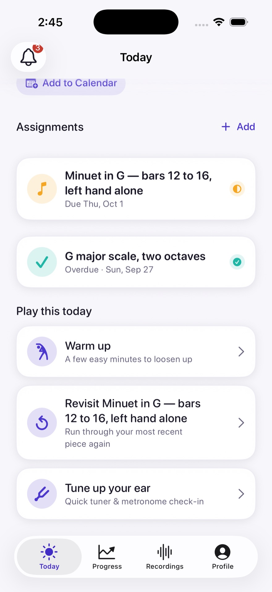

For teachers
Leave every lesson with a plan students can follow.
Set the passage, give a few clear steps, then respond to shared work as practice unfolds.
See how assignments workA little more music between lessons
Prova turns each lesson into a practice plan students can follow, teachers can guide, and families can encourage.

One practice week. Three wins.
For teachers
Set the passage, give a few clear steps, then respond to shared work as practice unfolds.
See how assignments workFor students
Keep the teacher’s instruction beside the passage, and share a take when you’re ready.
See guided practiceFor parents
Ask your child to show the practice plan and help make time for one clear next step.
See how progress carries forward01 / Assignment

A passage, an instruction, clear steps. Students know where to begin—and families have something concrete to encourage.
02 / Practice
Keep your teacher’s instruction beside the practice, so you know what to listen for.

03 / Recording
Record the passage you’re working on. Share a take when you’re ready for another pair of ears.

04 / Feedback
Understand what to improve, and where. Your teacher can reply beside the work or pin a comment to a moment in your take.
Sample replies · browser example, no audio
Let the half note ring its full value.
Selected note at 0:18.
05 / Next practice
Return to the teacher’s advice with a clear next step. Your sessions, notes and shared takes help prepare the next lesson.

Your studio, connected
Bring your studio. Teachers lead setup; students join with a class code and start with one clear assignment.
Ask about beta accessTeachers start a studio. Email us to ask about beta access, then create a studio and share a class code.
Students join with the code. Your teacher approves your request.
Begin with one clear assignment. Practice, share a take when you’re ready, and keep the next step close.
Ordinary practice takes stay private until the student shares them. A Performance run is sent to the teacher; Prova explains that before it starts.
The beta is for ages 13 and up. Younger students cannot join this beta.
Prova is free during the beta. Your feedback helps shape what comes next.
Beta access starts with a teacher-led studio.